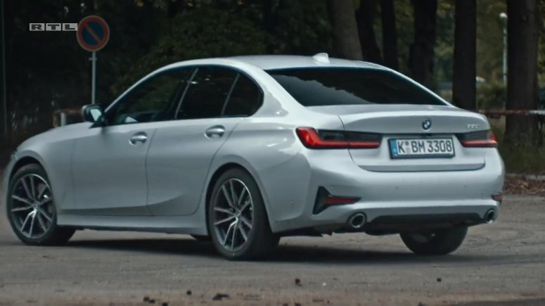

d-flex neymiş?
d-flex-inline neymiş? d-flex-inline neymiş? d-flex-inline neymiş?
d-flex-inline neymiş? d-flex-inline neymiş? d-flex-inline neymiş?
d-flex neymiş?
d-flex neymiş-1?

d-flex neymiş-2?
reverse olan d-flex
reverse olan d-flex
reverse olan d-flex
medium sonrası reverse olan d-flex
medium sonrası reverse olan d-flex
medium sonrası reverse olan d-flex
lg sonrası flex
lg sonrası flex
lg sonrası flex
lg sonrası flex-1
lg sonrası flex-2
lg sonrası flex-3
column-row flex-1
column-row flex-2
column-row flex-3